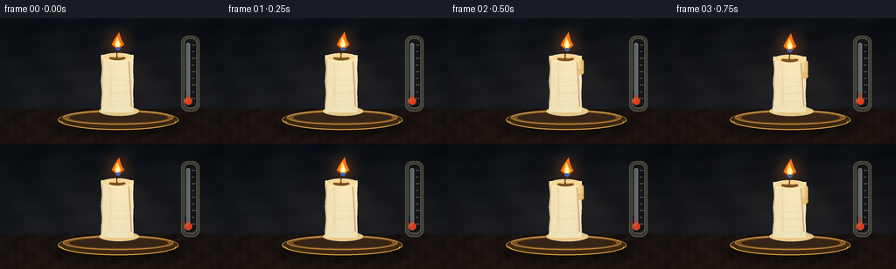
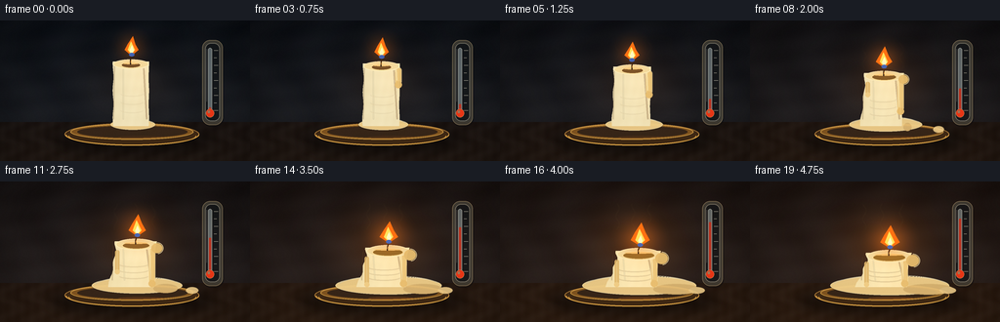

CODING AGENTS AS PIXEL WORLD MODELS
traex/GPT-5.6-Sol · phygen_097
点击播放 · 原生 RGB 像素
逐轮保存的候选
回放视频、检查图与代码变化。
每份候选均可单独播放。实际图片检查记录在下方工具轨迹中。
候选 01播放与检查图
点击播放 · 原生 RGB 像素


展开代码变化
--- 上一保存版本
+++ 本次保存版本
@@ -0,0 +1,248 @@
+from pathlib import Path
+import math
+import numpy as np
+from PIL import Image, ImageDraw, ImageFilter, ImageFont
+import artifact_io
+
+W,H,N = 256,144,20
+S=4
+w,h=W*S,H*S
+rng=np.random.default_rng(9701)
+
+def sc(v): return int(round(v*S))
+def pts(seq): return [(sc(x),sc(y)) for x,y in seq]
+def smooth(x): return x*x*(3-2*x)
+
+def radial_layer(size, center, radius, color, strength=1.0):
+ ww,hh=size
+ yy,xx=np.mgrid[0:hh,0:ww]
+ d=np.sqrt((xx-center[0])**2+(yy-center[1])**2)/radius
+ a=np.clip(1-d,0,1)**2*strength
+ arr=np.zeros((hh,ww,4),dtype=np.uint8)
+ arr[...,:3]=color
+ arr[...,3]=(255*a).astype(np.uint8)
+ return Image.fromarray(arr,'RGBA')
+
+def draw_thermometer(im, e):
+ # Antique wall thermometer, deliberately understated but readable.
+ layer=Image.new('RGBA',(w,h),(0,0,0,0)); d=ImageDraw.Draw(layer)
+ # shadow and brass back plate
+ d.rounded_rectangle((sc(208),sc(22),sc(229),sc(109)),radius=sc(8),fill=(8,10,13,85))
+ d.rounded_rectangle((sc(207),sc(20),sc(228),sc(107)),radius=sc(8),fill=(74,70,59,175),outline=(177,156,115,145),width=sc(.7))
+ d.rounded_rectangle((sc(210),sc(23),sc(225),sc(103)),radius=sc(6),fill=(20,23,25,165),outline=(213,205,179,120),width=sc(.7))
+ # scale ticks, more visible on right
+ for k in range(9):
+ yy=92-k*7.7
+ length=4.2 if k%2==0 else 2.8
+ d.line((sc(219),sc(yy),sc(219+length),sc(yy)),fill=(220,213,190,175),width=sc(.55))
+ # glass tube
+ d.rounded_rectangle((sc(213),sc(28),sc(217),sc(95)),radius=sc(2),fill=(200,218,218,105),outline=(235,240,226,160),width=sc(.55))
+ # rising red alcohol column
+ level=89-51*e
+ d.rounded_rectangle((sc(214.1),sc(level),sc(215.9),sc(96)),radius=sc(.8),fill=(211,44,22,245))
+ d.ellipse((sc(210.7),sc(90.5),sc(219.3),sc(99.2)),fill=(231,54,22,255),outline=(255,146,90,180),width=sc(.5))
+ d.ellipse((sc(212.5),sc(92),sc(215),sc(95)),fill=(255,174,120,150))
+ # tiny highlight
+ d.line((sc(211.6),sc(29),sc(211.6),sc(83)),fill=(255,255,248,65),width=sc(.5))
+ im.alpha_composite(layer)
+
+def wax_texture(mask, e, top_y):
+ yy,xx=np.mgrid[0:h,0:w]
+ # cylindrical warm ivory shading, warmer and more translucent over time
+ xn=(xx/S-135)/30
+ side=np.clip(1-np.abs(xn),0,1)
+ light=0.72+0.24*side + 0.035*np.sin((yy/S)*.42)+0.025*np.sin((xx/S)*.73+yy/S*.16)
+ base=np.zeros((h,w,4),dtype=np.uint8)
+ base[...,0]=np.clip((218+25*light+9*e),0,255)
+ base[...,1]=np.clip((196+34*light+3*e),0,255)
+ base[...,2]=np.clip((145+44*light-8*e),0,255)
+ # right side catches firelight
+ glow=np.clip(1-np.sqrt(((xx/S-151)/40)**2+((yy/S-top_y)/62)**2),0,1)
+ base[...,0]=np.clip(base[...,0]+13*glow,0,255)
+ base[...,1]=np.clip(base[...,1]+6*glow,0,255)
+ base[...,3]=np.array(mask)
+ return Image.fromarray(base,'RGBA')
+
+def make_frame(i):
+ t=i/(N-1)
+ e=smooth(t)
+ yy,xx=np.mgrid[0:h,0:w]
+ X=xx/S; Y=yy/S
+ # cinematic dark room shifts perceptibly warmer as temperature rises
+ horizon=103
+ vertical=np.clip(Y/horizon,0,1)
+ warm=e
+ bg=np.zeros((h,w,3),dtype=np.float32)
+ bg[...,0]=13+15*vertical+19*warm
+ bg[...,1]=17+13*vertical+5*warm
+ bg[...,2]=23+12*vertical-5*warm
+ # broad fire glow on wall
+ gd=np.sqrt(((X-139)/91)**2+((Y-64)/71)**2)
+ g=np.clip(1-gd,0,1)**2*(.25+.75*e)
+ bg[...,0]+=55*g; bg[...,1]+=26*g; bg[...,2]+=3*g
+ # subtle wall mottling, fixed across time
+ grain=2.3*np.sin(X*.093+np.sin(Y*.051)*2)+1.2*np.sin(Y*.27+X*.034)
+ bg += grain[...,None]
+ # table
+ table=Y>=104
+ tb=np.zeros_like(bg)
+ tb[...,0]=29+18*e + 8*np.clip((Y-104)/40,0,1)
+ tb[...,1]=22+8*e + 5*np.clip((Y-104)/40,0,1)
+ tb[...,2]=19+2*np.clip((Y-104)/40,0,1)
+ wood=3*np.sin(X*.19+2*np.sin(Y*.23))+1.5*np.sin(X*.62)
+ tb+=wood[...,None]
+ bg[table]=tb[table]
+ im=Image.fromarray(np.clip(bg,0,255).astype(np.uint8),'RGB').convert('RGBA')
+
+ # wall vignette
+ vign=np.clip(((X-128)/155)**2+((Y-70)/115)**2,0,1)
+ va=(vign*78).astype(np.uint8)
+ vlay=np.zeros((h,w,4),dtype=np.uint8); vlay[...,3]=va
+ im.alpha_composite(Image.fromarray(vlay,'RGBA'))
+ draw_thermometer(im,e)
+
+ # Increasing heat shimmer: coherent rising curves behind flame
+ heat=Image.new('RGBA',(w,h),(0,0,0,0)); hd=ImageDraw.Draw(heat)
+ for q in range(3):
+ alpha=int(10+36*e)
+ x0=119+q*18+2.2*math.sin(i*.55+q)
+ line=[]
+ for z in np.linspace(0,28,35):
+ line.append((x0+1.8*math.sin(z*.38+i*.34+q*1.9),50-z))
+ hd.line(pts(line),fill=(255,202,114,alpha),width=sc(.7))
+ im.alpha_composite(heat.filter(ImageFilter.GaussianBlur(sc(.7))))
+
+ # candle shadow on table
+ sh=Image.new('RGBA',(w,h),(0,0,0,0)); sd=ImageDraw.Draw(sh)
+ sd.ellipse((sc(55-8*e),sc(108),sc(217+8*e),sc(137)),fill=(0,0,0,125))
+ sh=sh.filter(ImageFilter.GaussianBlur(sc(7)))
+ im.alpha_composite(sh)
+
+ # brass saucer
+ plate=Image.new('RGBA',(w,h),(0,0,0,0)); pd=ImageDraw.Draw(plate)
+ pd.ellipse((sc(66),sc(105),sc(204),sc(128)),fill=(65,42,20,240),outline=(182,128,58,235),width=sc(1.1))
+ pd.ellipse((sc(72),sc(106),sc(198),sc(122)),fill=(125,82,31,255),outline=(225,168,74,220),width=sc(1))
+ pd.ellipse((sc(79),sc(108),sc(192),sc(120)),fill=(55,38,24,245))
+ pd.arc((sc(70),sc(108),sc(201),sc(128)),0,180,fill=(239,176,72,205),width=sc(1))
+ im.alpha_composite(plate)
+
+ # Melted pool, expands dramatically, asymmetrically with a spreading tongue to right
+ pool=Image.new('RGBA',(w,h),(0,0,0,0)); po=ImageDraw.Draw(pool)
+ poolrx=23+38*e; poolry=4+4.5*e
+ cx=136+7*e
+ po.ellipse((sc(cx-poolrx),sc(105-poolry),sc(cx+poolrx),sc(108+poolry)),fill=(238,204,135,245),outline=(255,232,174,245),width=sc(.8))
+ if e>.35:
+ a=(e-.35)/.65
+ po.ellipse((sc(157),sc(105),sc(163+46*a),sc(113+3*a)),fill=(229,190,119,230))
+ po.ellipse((sc(187+7*a),sc(108),sc(198+13*a),sc(115)),fill=(242,207,139,220))
+ # specular crescent
+ po.arc((sc(cx-poolrx+3),sc(104-poolry),sc(cx+poolrx-2),sc(109+poolry)),190,344,fill=(255,244,202,190),width=sc(.8))
+ im.alpha_composite(pool.filter(ImageFilter.GaussianBlur(sc(.15))))
+
+ # Solid/slumping candle body profile
+ basey=108
+ height=66-31*e
+ topy=basey-height
+ left=[]; right=[]
+ for j in range(51):
+ u=j/50 # top to bottom
+ y=topy+height*u
+ bend=(8.5*e*(1-u)**1.35)
+ center=134+bend + 1.3*e*math.sin(u*math.pi)
+ # broad squat base as wax softens
+ half=18.2 + 4.0*e*(1-u) + 8.5*e*u*u
+ # melting scallops mostly on upper half
+ wob=(.45+1.4*e*(1-u))*math.sin(u*15+1.1)
+ left.append((center-half-wob,y))
+ right.append((center+half+.45*wob,y))
+ bodypoly=left+right[::-1]
+ mask=Image.new('L',(w,h),0); md=ImageDraw.Draw(mask)
+ md.polygon(pts(bodypoly),fill=255)
+ im.alpha_composite(wax_texture(mask,e,topy))
+
+ # body modeling: side shade, wrinkles and glossy softened ridges
+ detail=Image.new('RGBA',(w,h),(0,0,0,0)); dd=ImageDraw.Draw(detail)
+ dd.line(pts([(117-2*e,topy+4),(116-2*e,101)]),fill=(115,78,45,75),width=sc(1.1))
+ dd.line(pts([(126,topy+8),(126+2*e,101)]),fill=(255,242,194,100),width=sc(1.0))
+ dd.line(pts([(147+5*e,topy+7),(150+7*e,101)]),fill=(126,80,40,90),width=sc(1.4))
+ # horizontal time-lapse melt folds on late body
+ for q in range(3):
+ yline=topy+height*(.48+.13*q)
+ xmid=135+3*e
+ span=12+5*e
+ dd.arc((sc(xmid-span),sc(yline-2),sc(xmid+span),sc(yline+4)),8,168,fill=(150,105,59,int(20+45*e)),width=sc(.7))
+ im.alpha_composite(detail.filter(ImageFilter.GaussianBlur(sc(.18))))
+
+ # Running wax drips. They lengthen then merge into the pool.
+ drips=Image.new('RGBA',(w,h),(0,0,0,0)); dr=ImageDraw.Draw(drips)
+ if t>.08:
+ a=min(1,(t-.08)/.60)
+ xdr=151+7*e
+ y0=topy+4
+ y1=min(basey-4,y0+12+40*a)
+ dr.rounded_rectangle((sc(xdr-3),sc(y0),sc(xdr+3.7),sc(y1)),radius=sc(3),fill=(238,199,123,245),outline=(255,231,171,180),width=sc(.6))
+ dr.ellipse((sc(xdr-3.2),sc(y1-3),sc(xdr+4),sc(y1+4)),fill=(232,189,110,245))
+ dr.line((sc(xdr-1.7),sc(y0+2),sc(xdr-1.3),sc(max(y0+3,y1-4))),fill=(255,243,192,150),width=sc(.8))
+ if t>.34:
+ a=min(1,(t-.34)/.5); xdr=121-2*e; y0=topy+9; y1=min(105,y0+8+29*a)
+ dr.rounded_rectangle((sc(xdr-2),sc(y0),sc(xdr+2.5),sc(y1)),radius=sc(2),fill=(224,182,106,230))
+ dr.ellipse((sc(xdr-2.3),sc(y1-2),sc(xdr+2.8),sc(y1+3)),fill=(239,202,129,235))
+ im.alpha_composite(drips)
+
+ # Melting top: lip ellipse, dark liquid well, increasingly irregular softened rim
+ top=Image.new('RGBA',(w,h),(0,0,0,0)); td=ImageDraw.Draw(top)
+ tcx=134+8.5*e
+ rx=18.2+4.2*e; ry=4.8+1.7*e
+ td.ellipse((sc(tcx-rx),sc(topy-ry*.45),sc(tcx+rx),sc(topy+ry*1.55)),fill=(245,219,158,255),outline=(255,239,190,245),width=sc(.8))
+ # liquid wax basin gets wider and amber as heat rises
+ brx=10+7*e; bry=2.6+1.2*e
+ td.ellipse((sc(tcx-brx),sc(topy+.5),sc(tcx+brx),sc(topy+1.5+2*bry)),fill=(112+int(39*e),73+int(33*e),35,245),outline=(255,220,145,200),width=sc(.7))
+ td.ellipse((sc(tcx-brx+2),sc(topy+1.2),sc(tcx+brx-2),sc(topy+2.7)),fill=(247,179,72,130))
+ # late collapsed lip at right
+ if e>.3:
+ td.ellipse((sc(tcx+rx-5),sc(topy+2),sc(tcx+rx+3+5*e),sc(topy+9+5*e)),fill=(231,188,109,245))
+ td.arc((sc(tcx+rx-6),sc(topy+1),sc(tcx+rx+4+5*e),sc(topy+10+5*e)),270,80,fill=(255,233,173,210),width=sc(.7))
+ im.alpha_composite(top)
+
+ # wick, sinking/bending as the candle collapses
+ wicktop=topy-6.5+1.2*e
+ wl=[(tcx-.5,topy+3),(tcx-.4,topy-1),(tcx+1.3*e,wicktop)]
+ wd=ImageDraw.Draw(im)
+ wd.line(pts(wl),fill=(39,25,16,255),width=sc(1.25),joint='curve')
+ wd.line(pts([(tcx-.1,topy+1),(tcx+.2,topy-1)]),fill=(255,171,54,220),width=sc(.45))
+
+ # Flame with glow and coherent timelapse flicker; heat makes it broader/brighter
+ flick=math.sin(i*1.17)*1.4+math.sin(i*.47+1)*.7
+ fx=tcx+1.3*e+flick
+ fy=wicktop-.5
+ flame_h=19+3.5*e+1.1*math.sin(i*.83)
+ flame_w=7.2+2.8*e
+ glow=radial_layer((w,h),(sc(fx),sc(fy-7)),sc(26+8*e),(255,116,24),.32+.20*e)
+ im.alpha_composite(glow)
+ fl=Image.new('RGBA',(w,h),(0,0,0,0)); fd=ImageDraw.Draw(fl)
+ outer=[(fx,fy+1),(fx-flame_w,fy-5),(fx-flame_w*.53,fy-flame_h*.58),(fx+1.1+flick*.35,fy-flame_h),(fx+flame_w*.55,fy-flame_h*.55),(fx+flame_w,fy-5)]
+ fd.polygon(pts(outer),fill=(255,113,18,255))
+ inner=[(fx,fy),(fx-flame_w*.52,fy-5),(fx-.7,fy-flame_h*.72),(fx+flame_w*.48,fy-5)]
+ fd.polygon(pts(inner),fill=(255,226,91,255))
+ core=[(fx,fy-.5),(fx-2.2,fy-4.5),(fx+.4,fy-10),(fx+2.5,fy-4.4)]
+ fd.polygon(pts(core),fill=(255,250,191,255))
+ fd.ellipse((sc(fx-2.7),sc(fy-2),sc(fx+2.8),sc(fy+1.8)),fill=(68,111,210,210))
+ im.alpha_composite(fl.filter(ImageFilter.GaussianBlur(sc(.12))))
+
+ # foreground saucer glint and tiny pool reflection
+ fg=Image.new('RGBA',(w,h),(0,0,0,0)); gd=ImageDraw.Draw(fg)
+ gd.arc((sc(67),sc(105),sc(204),sc(128)),3,177,fill=(246,183,78,220),width=sc(1))
+ gd.ellipse((sc(121),sc(118),sc(167),sc(121)),fill=(255,126,35,int(12+33*e)))
+ im.alpha_composite(fg)
+
+ # film grain fixed-ish with small temporal phase, not distracting
+ arr=np.asarray(im.convert('RGB')).astype(np.int16)
+ noise=(np.sin((xx*12.9898+yy*78.233+i*.31))*43758.5453)%1-.5
+ arr=np.clip(arr+noise[...,None]*1.8,0,255).astype(np.uint8)
+ out=Image.fromarray(arr,'RGB').resize((W,H),Image.Resampling.LANCZOS)
+ return np.asarray(out,dtype=np.uint8)
+
+frames=np.stack([make_frame(i) for i in range(N)],axis=0)
+case_dir=Path(__file__).resolve().parent
+artifact_io.save(frames,case_dir)
+print('saved',frames.shape,frames.dtype)
可观测工具轨迹
实际执行的命令与返回图片。
命令 1exit 0
/bin/bash -lc "cat prompt.txt && printf '\\n---RULES---\\n' && cat GENERATION_RULES.md && printf '\\n---SPEC---\\n' && cat task_spec.json"
命令 2exit 0
/bin/bash -lc "find . -maxdepth 2 -type f -printf '%p\\n' | sort && printf '\\nTOOLS\\n' && command -v ffmpeg || true && command -v blender || true && command -v convert || true && command -v python3"
命令 3exit 0
/bin/bash -lc 'cat artifact_io.py'
命令 4exit 0
/bin/bash -lc "cat > generate.py <<'PY'
from pathlib import Path
import math
import numpy as np
from PIL import Image, ImageDraw, ImageFilter, ImageFont
import artifact_io
W,H,N = 256,144,20
S=4
w,h=W*S,H*S
rng=np.random.default_rng(9701)
def sc(v): return int(round(v*S))
def pts(seq): return [(sc(x),sc(y)) for x,y in seq]
def smooth(x): return x*x*(3-2*x)
def radial_layer(size, center, radius, color, strength=1.0):
ww,hh=size
yy,xx=np.mgrid[0:hh,0:ww]
d=np.sqrt((xx-center[0])**2+(yy-center[1])**2)/radius
a=np.clip(1-d,0,1)**2*strength
arr=np.zeros((hh,ww,4),dtype=np.uint8)
arr[...,:3]=color
arr[...,3]=(255*a).astype(np.uint8)
return Image.fromarray(arr,'RGBA')
def draw_thermometer(im, e):
# Antique wall thermometer, deliberately understated but readable.
layer=Image.new('RGBA',(w,h),(0,0,0,0)); d=ImageDraw.Draw(layer)
# shadow and brass back plate
d.rounded_rectangle((sc(208),sc(22),sc(229),sc(109)),radius=sc(8),fill=(8,10,13,85))
d.rounded_rectangle((sc(207),sc(20),sc(228),sc(107)),radius=sc(8),fill=(74,70,59,175),outline=(177,156,115,145),width=sc(.7))
d.rounded_rectangle((sc(210),sc(23),sc(225),sc(103)),radius=sc(6),fill=(20,23,25,165),outline=(213,205,179,120),width=sc(.7))
# scale ticks, more visible on right
for k in range(9):
yy=92-k*7.7
length=4.2 if k%2==0 else 2.8
d.line((sc(219),sc(yy),sc(219+length),sc(yy)),fill=(220,213,190,175),width=sc(.55))
# glass tube
d.rounded_rectangle((sc(213),sc(28),sc(217),sc(95)),radius=sc(2),fill=(200,218,218,105),outline=(235,240,226,160),width=sc(.55))
# rising red alcohol column
level=89-51*e
d.rounded_rectangle((sc(214.1),sc(level),sc(215.9),sc(96)),radius=sc(.8),fill=(211,44,22,245))
d.ellipse((sc(210.7),sc(90.5),sc(219.3),sc(99.2)),fill=(231,54,22,255),outline=(255,146,90,180),width=sc(.5))
d.ellipse((sc(212.5),sc(92),sc(215),sc(95)),fill=(255,174,120,150))
# tiny highlight
d.line((sc(211.6),sc(29),sc(211.6),sc(83)),fill=(255,255,248,65),width=sc(.5))
im.alpha_composite(layer)
def wax_texture(mask, e, top_y):
yy,xx=np.mgrid[0:h,0:w]
# cylindrical warm ivory shading, warmer and more translucent over time
xn=(xx/S-135)/30
side=np.clip(1-np.abs(xn),0,1)
light=0.72+0.24*side + 0.035*np.sin((yy/S)*.42)+0.025*np.sin((xx/S)*.73+yy/S*.16)
base=np.zeros((h,w,4),dtype=np.uint8)
base[...,0]=np.clip((218+25*light+9*e),0,255)
base[...,1]=np.clip((196+34*light+3*e),0,255)
base[...,2]=np.clip((145+44*light-8*e),0,255)
# right side catches firelight
glow=np.clip(1-np.sqrt(((xx/S-151)/40)**2+((yy/S-top_y)/62)**2),0,1)
base[...,0]=np.clip(base[...,0]+13*glow,0,255)
base[...,1]=np.clip(base[...,1]+6*glow,0,255)
base[...,3]=np.array(mask)
return Image.fromarray(base,'RGBA')
def make_frame(i):
t=i/(N-1)
e=smooth(t)
yy,xx=np.mgrid[0:h,0:w]
X=xx/S; Y=yy/S
# cinematic dark room shifts perceptibly warmer as temperature rises
horizon=103
vertical=np.clip(Y/horizon,0,1)
warm=e
bg=np.zeros((h,w,3),dtype=np.float32)
bg[...,0]=13+15*vertical+19*warm
bg[...,1]=17+13*vertical+5*warm
bg[...,2]=23+12*vertical-5*warm
# broad fire glow on wall
gd=np.sqrt(((X-139)/91)**2+((Y-64)/71)**2)
g=np.clip(1-gd,0,1)**2*(.25+.75*e)
bg[...,0]+=55*g; bg[...,1]+=26*g; bg[...,2]+=3*g
# subtle wall mottling, fixed across time
grain=2.3*np.sin(X*.093+np.sin(Y*.051)*2)+1.2*np.sin(Y*.27+X*.034)
bg += grain[...,None]
# table
table=Y>=104
tb=np.zeros_like(bg)
tb[...,0]=29+18*e + 8*np.clip((Y-104)/40,0,1)
tb[...,1]=22+8*e + 5*np.clip((Y-104)/40,0,1)
tb[...,2]=19+2*np.clip((Y-104)/40,0,1)
wood=3*np.sin(X*.19+2*np.sin(Y*.23))+1.5*np.sin(X*.62)
tb+=wood[...,None]
bg[table]=tb[table]
im=Image.fromarray(np.clip(bg,0,255).astype(np.uint8),'RGB').convert('RGBA')
# wall vignette
vign=np.clip(((X-128)/155)**2+((Y-70)/115)**2,0,1)
va=(vign*78).astype(np.uint8)
vlay=np.zeros((h,w,4),dtype=np.uint8); vlay[...,3]=va
im.alpha_composite(Image.fromarray(vlay,'RGBA'))
draw_thermometer(im,e)
# Increasing heat shimmer: coherent rising curves behind flame
heat=Image.new('RGBA',(w,h),(0,0,0,0)); hd=ImageDraw.Draw(heat)
for q in range(3):
alpha=int(10+36*e)
x0=119+q*18+2.2*math.sin(i*.55+q)
line=[]
for z in np.linspace(0,28,35):
line.append((x0+1.8*math.sin(z*.38+i*.34+q*1.9),50-z))
hd.line(pts(line),fill=(255,202,114,alpha),width=sc(.7))
im.alpha_composite(heat.filter(ImageFilter.GaussianBlur(sc(.7))))
# candle shadow on table
sh=Image.new('RGBA',(w,h),(0,0,0,0)); sd=ImageDraw.Draw(sh)
sd.ellipse((sc(55-8*e),sc(108),sc(217+8*e),sc(137)),fill=(0,0,0,125))
sh=sh.filter(ImageFilter.GaussianBlur(sc(7)))
im.alpha_composite(sh)
# brass saucer
plate=Image.new('RGBA',(w,h),(0,0,0,0)); pd=ImageDraw.Draw(plate)
pd.ellipse((sc(66),sc(105),sc(204),sc(128)),fill=(65,42,20,240),outline=(182,128,58,235),width=sc(1.1))
pd.ellipse((sc(72),sc(106),sc(198),sc(122)),fill=(125,82,31,255),outline=(225,168,74,220),width=sc(1))
pd.ellipse((sc(79),sc(108),sc(192),sc(120)),fill=(55,38,24,245))
pd.arc((sc(70),sc(108),sc(201),sc(128)),0,180,fill=(239,176,72,205),width=sc(1))
im.alpha_composite(plate)
# Melted pool, expands dramatically, asymmetrically with a spreading tongue to right
pool=Image.new('RGBA',(w,h),(0,0,0,0)); po=ImageDraw.Draw(pool)
poolrx=23+38*e; poolry=4+4.5*e
cx=136+7*e
po.ellipse((sc(cx-poolrx),sc(105-poolry),sc(cx+poolrx),sc(108+poolry)),fill=(238,204,135,245),outline=(255,232,174,245),width=sc(.8))
if e>.35:
a=(e-.35)/.65
po.ellipse((sc(157),sc(105),sc(163+46*a),sc(113+3*a)),fill=(229,190,119,230))
po.ellipse((sc(187+7*a),sc(108),sc(198+13*a),sc(115)),fill=(242,207,139,220))
# specular crescent
po.arc((sc(cx-poolrx+3),sc(104-poolry),sc(cx+poolrx-2),sc(109+poolry)),190,344,fill=(255,244,202,190),width=sc(.8))
im.alpha_composite(pool.filter(ImageFilter.GaussianBlur(sc(.15))))
# Solid/slumping candle body profile
basey=108
height=66-31*e
topy=basey-height
left=[]; right=[]
for j in range(51):
u=j/50 # top to bottom
y=topy+height*u
bend=(8.5*e*(1-u)**1.35)
center=134+bend + 1.3*e*math.sin(u*math.pi)
# broad squat base as wax softens
half=18.2 + 4.0*e*(1-u) + 8.5*e*u*u
# melting scallops mostly on upper half
wob=(.45+1.4*e*(1-u))*math.sin(u*15+1.1)
left.append((center-half-wob,y))
right.append((center+half+.45*wob,y))
bodypoly=left+right[::-1]
mask=Image.new('L',(w,h),0); md=ImageDraw.Draw(mask)
md.polygon(pts(bodypoly),fill=255)
im.alpha_composite(wax_texture(mask,e,topy))
# body modeling: side shade, wrinkles and glossy softened ridges
detail=Image.new('RGBA',(w,h),(0,0,0,0)); dd=ImageDraw.Draw(detail)
dd.line(pts([(117-2*e,topy+4),(116-2*e,101)]),fill=(115,78,45,75),width=sc(1.1))
dd.line(pts([(126,topy+8),(126+2*e,101)]),fill=(255,242,194,100),width=sc(1.0))
dd.line(pts([(147+5*e,topy+7),(150+7*e,101)]),fill=(126,80,40,90),width=sc(1.4))
# horizontal time-lapse melt folds on late body
for q in range(3):
yline=topy+height*(.48+.13*q)
xmid=135+3*e
span=12+5*e
dd.arc((sc(xmid-span),sc(yline-2),sc(xmid+span),sc(yline+4)),8,168,fill=(150,105,59,int(20+45*e)),width=sc(.7))
im.alpha_composite(detail.filter(ImageFilter.GaussianBlur(sc(.18))))
# Running wax drips. They lengthen then merge into the pool.
drips=Image.new('RGBA',(w,h),(0,0,0,0)); dr=ImageDraw.Draw(drips)
if t>.08:
a=min(1,(t-.08)/.60)
xdr=151+7*e
y0=topy+4
y1=min(basey-4,y0+12+40*a)
dr.rounded_rectangle((sc(xdr-3),sc(y0),sc(xdr+3.7),sc(y1)),radius=sc(3),fill=(238,199,123,245),outline=(255,231,171,180),width=sc(.6))
dr.ellipse((sc(xdr-3.2),sc(y1-3),sc(xdr+4),sc(y1+4)),fill=(232,189,110,245))
dr.line((sc(xdr-1.7),sc(y0+2),sc(xdr-1.3),sc(max(y0+3,y1-4))),fill=(255,243,192,150),width=sc(.8))
if t>.34:
a=min(1,(t-.34)/.5); xdr=121-2*e; y0=topy+9; y1=min(105,y0+8+29*a)
dr.rounded_rectangle((sc(xdr-2),sc(y0),sc(xdr+2.5),sc(y1)),radius=sc(2),fill=(224,182,106,230))
dr.ellipse((sc(xdr-2.3),sc(y1-2),sc(xdr+2.8),sc(y1+3)),fill=(239,202,129,235))
im.alpha_composite(drips)
# Melting top: lip ellipse, dark liquid well, increasingly irregular softened rim
top=Image.new('RGBA',(w,h),(0,0,0,0)); td=ImageDraw.Draw(top)
tcx=134+8.5*e
rx=18.2+4.2*e; ry=4.8+1.7*e
td.ellipse((sc(tcx-rx),sc(topy-ry*.45),sc(tcx+rx),sc(topy+ry*1.55)),fill=(245,219,158,255),outline=(255,239,190,245),width=sc(.8))
# liquid wax basin gets wider and amber as heat rises
brx=10+7*e; bry=2.6+1.2*e
td.ellipse((sc(tcx-brx),sc(topy+.5),sc(tcx+brx),sc(topy+1.5+2*bry)),fill=(112+int(39*e),73+int(33*e),35,245),outline=(255,220,145,200),width=sc(.7))
td.ellipse((sc(tcx-brx+2),sc(topy+1.2),sc(tcx+brx-2),sc(topy+2.7)),fill=(247,179,72,130))
# late collapsed lip at right
if e>.3:
td.ellipse((sc(tcx+rx-5),sc(topy+2),sc(tcx+rx+3+5*e),sc(topy+9+5*e)),fill=(231,188,109,245))
td.arc((sc(tcx+rx-6),sc(topy+1),sc(tcx+rx+4+5*e),sc(topy+10+5*e)),270,80,fill=(255,233,173,210),width=sc(.7))
im.alpha_composite(top)
# wick, sinking/bending as the candle collapses
wicktop=topy-6.5+1.2*e
wl=[(tcx-.5,topy+3),(tcx-.4,topy-1),(tcx+1.3*e,wicktop)]
wd=ImageDraw.Draw(im)
wd.line(pts(wl),fill=(39,25,16,255),width=sc(1.25),joint='curve')
wd.line(pts([(tcx-.1,topy+1),(tcx+.2,topy-1)]),fill=(255,171,54,220),width=sc(.45))
# Flame with glow and coherent timelapse flicker; heat makes it broader/brighter
flick=math.sin(i*1.17)*1.4+math.sin(i*.47+1)*.7
fx=tcx+1.3*e+flick
fy=wicktop-.5
flame_h=19+3.5*e+1.1*math.sin(i*.83)
flame_w=7.2+2.8*e
glow=radial_layer((w,h),(sc(fx),sc(fy-7)),sc(26+8*e),(255,116,24),.32+.20*e)
im.alpha_composite(glow)
fl=Image.new('RGBA',(w,h),(0,0,0,0)); fd=ImageDraw.Draw(fl)
outer=[(fx,fy+1),(fx-flame_w,fy-5),(fx-flame_w*.53,fy-flame_h*.58),(fx+1.1+flick*.35,fy-flame_h),(fx+flame_w*.55,fy-flame_h*.55),(fx+flame_w,fy-5)]
fd.polygon(pts(outer),fill=(255,113,18,255))
inner=[(fx,fy),(fx-flame_w*.52,fy-5),(fx-.7,fy-flame_h*.72),(fx+flame_w*.48,fy-5)]
fd.polygon(pts(inner),fill=(255,226,91,255))
core=[(fx,fy-.5),(fx-2.2,fy-4.5),(fx+.4,fy-10),(fx+2.5,fy-4.4)]
fd.polygon(pts(core),fill=(255,250,191,255))
fd.ellipse((sc(fx-2.7),sc(fy-2),sc(fx+2.8),sc(fy+1.8)),fill=(68,111,210,210))
im.alpha_composite(fl.filter(ImageFilter.GaussianBlur(sc(.12))))
# foreground saucer glint and tiny pool reflection
fg=Image.new('RGBA',(w,h),(0,0,0,0)); gd=ImageDraw.Draw(fg)
gd.arc((sc(67),sc(105),sc(204),sc(128)),3,177,fill=(246,183,78,220),width=sc(1))
gd.ellipse((sc(121),sc(118),sc(167),sc(121)),fill=(255,126,35,int(12+33*e)))
im.alpha_composite(fg)
# film grain fixed-ish with small temporal phase, not distracting
arr=np.asarray(im.convert('RGB')).astype(np.int16)
noise=(np.sin((xx*12.9898+yy*78.233+i*.31))*43758.5453)%1-.5
arr=np.clip(arr+noise[...,None]*1.8,0,255).astype(np.uint8)
out=Image.fromarray(arr,'RGB').resize((W,H),Image.Resampling.LANCZOS)
return np.asarray(out,dtype=np.uint8)
frames=np.stack([make_frame(i) for i in range(N)],axis=0)
case_dir=Path(__file__).resolve().parent
artifact_io.save(frames,case_dir)
print('saved',frames.shape,frames.dtype)
PY
python3 generate.py"命令 5exit 0
/bin/bash -lc "python3 - <<'PY'
import numpy as np
from pathlib import Path
p=np.load('pixels.npz')['pixels']
print(p.shape,p.dtype,'frames unique',len({x.tobytes() for x in p.transpose(2,0,1)}))
for x in ['pixels.npz','index.html','inspection.png','transition_check.png','generate.py']:
print(x,Path(x).stat().st_size)
PY"视觉工具实际返回图片 1

视觉工具实际返回图片 2

保存候选 1 份；完成命令 5 次；可验证图片返回 2 张。原始 API 响应与完整日志保留在本地。